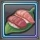
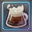

<html>

<head>
  <link href="https://cdnjs.cloudflare.com/ajax/libs/mermaid/6.0.0/mermaid.css" rel="stylesheet" />
  <script src="https://cdnjs.cloudflare.com/ajax/libs/mermaid/6.0.0/mermaid.js"></script>
  <script>
    window.onload = function () {
      var mermaidAPI = mermaid.mermaidAPI;

      var config = {
        startOnLoad: false,
        htmlLabels: true,
        callback: function (id) {
          console.log(id, ' rendered');
        },
        flowchart: {
          useMaxWidth: false,
        }
      };
      mermaid.initialize(config);

      var element = document.getElementById("app");
      var insertSvg = function (svgCode, bindFunctions) {
        element.innerHTML = svgCode;
      };
      var graphDefinition = `
graph LR

subgraph 釣り
S1(マーブルスネークフィッシュ)
S2(ファッティーソードフィッシュ)
S1S1(スネークフィッシュの骨)
S1S2(ソードフィッシュの切り身)
S2S1(ホワイトフィッシュの鱗粉)
S2S2(魚の脂身)
end

subgraph 植物
S3(ストロベリーフラワー)
S4(泥つきミニシロナ)
S5(イエロープルーン)
S6(バタフラワー)
S3S1(ブルースカイフラワー)
S3S2(フレイムフラワー)
S4S1(ホウサイ)
S4S2(キュウサイ)
S5S1(ドリームフルーツ)
S5S2(キャラメルカカオ)
S6S1(アールハーブ)
S6S2(キャロット草)
end

subgraph 料理
R1(未鑑定の冷製スープ)
R2(未鑑定の星界握りずし)
R3(未鑑定のシーフード焼き)
R4(未鑑定のフィッシュフライ丼)
R5(未鑑定のスターハーブティー)
R6(未鑑定のボルケーノビール)
R7(未鑑定のプラフライ)
R8(未鑑定の星界野菜炒め)
R9(未鑑定のレクイエムジュース)
R10(未鑑定のキャラメルプリン)
R11(未鑑定のロイヤルミルクティー)
R12(未鑑定の星界団子スープ)
end

S1 --> S1S1
S1 --> S1S2
S2 --> S2S1
S2 --> S2S2
S3 --> S3S1
S3 --> S3S2
S4 --> S4S1
S4 --> S4S2
S5 --> S5S1
S5 --> S5S2
S6 --> S6S1
S6 --> S6S2
S1S1 --> R1
S1S2 --> R2
S2S1 --> R3
S2S2 --> R4
S3S1 --> R5
S3S2 --> R6
S4S1 --> R7
S4S2 --> R8
S5S1 --> R9
S5S2 --> R10
S6S1 --> R11
S6S2 --> R12

    `;

      var graph = mermaidAPI.render("mermaid", graphDefinition, insertSvg);
    };
  </script>
</head>

<body>
  <div id="app"></div>

</body>

</html>